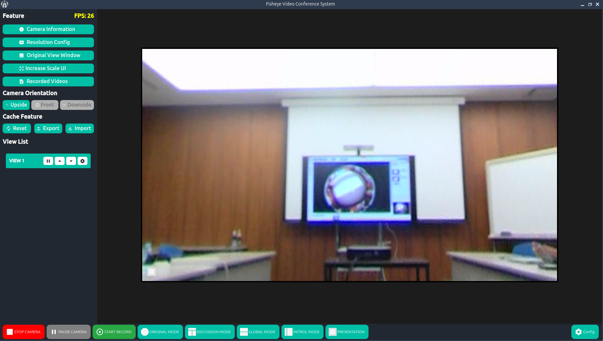

Operations Guide
Use this guide to run Moil Meeting day to day. Start with the Quick Start Guide, then return here as a reference.
Application Overview
Fisheye Video Conference System is a video conferencing application designed with a streamlined and modern interface. Upon launch, users are immediately presented with the main dashboard for rapid access to core functionalities.
Operational Modes
The application features several distinct operational modes, accessible via the bottom navigation bar:
- Start Camera — Activates video capture for all modes.
- Original Mode — Displays the raw, uncorrected fisheye view.
- Discussion Mode — Facilitates interactive, multi-participant discussions.
- Global Mode — Connects participants globally with panoramic views.
- Patrol Mode — Automated surveillance scanning.
- Presentation Mode — Optimized for content delivery and focus.
 Main Interface with Mode Selection
Main Interface with Mode Selection
Quick Start Guide
Welcome to Moil Meeting, a comprehensive solution for 360° video conferencing and surveillance. Whether hosting a remote meeting, monitoring a wide area, or delivering a presentation, this platform provides the flexibility you need.
Initial Setup
Launch the application to access the main interface.

Media Source Selection
Click the START CAMERA button to initiate the video feed. You will be prompted to select a source:
- Open Camera — Use a connected USB or built-in camera.
- Load Media — Play a pre-recorded video file.
- Camera URL — Connect to an IP camera stream.
 Original Mode Active
Original Mode Active
Each source allows for detailed configuration, including resolution and frame rate adjustments.
Switching Modes
Methods of operation can be switched dynamically. The application defaults to Original Mode upon initialization.
 Discussion Mode
Discussion Mode
 Patrol Mode
Patrol Mode
 Presentation Mode
Presentation Mode
Camera Operations
Starting the Camera
 Source Selection Dialog
Source Selection Dialog
Procedure:
- Click START CAMERA at the bottom of the interface.
- Choose your input source in the dialog:
- Open Camera: For physical devices.
- Load Media: For file playback.
- Camera URL: For network streams.
- Token: For authenticated streams.
- Click OK to proceed.
Camera Controls

Playback Controls
Once active, use the control bar to manage the feed:
- Stop Camera: Completely stops the video feed.
- Pause Camera: Freezes the current frame.
- Play Camera: Resumes the feed from a paused state.
Recording Functions
Start Recording
- Click the Start Recording button.
- A confirmation message, "Recording Started," will appear.

Recording Active
Stop Recording
- Click Stop Recording.
- A "Recording Finished" confirmation will display the saved file path.

Recording Saved
Detailed Mode Operations
Original Mode
Displays the full 360-degree fisheye view. This mode shows the complete, distorted image as captured by the sensor.
 360° Fisheye View
360° Fisheye View
Key Benefits:
- Total Coverage: Eliminates blind spots by capturing the entire room.
- Situational Awareness: Provides full context for surveillance or large meetings.
- Simplicity: No need for manual pan/tilt adjustments.
Discussion Mode
Designed for multi-participant meetings, this mode creates virtual "cameras" from the single fisheye source.
 Discussion Mode Interface
Discussion Mode Interface
Configuration
Access settings via the Config Button:

Features: - Limit Person: Choose between 2, 3, 4, 6, or 8 participant views. - View List: Manage individual views (Pause, Reorder, Configure). - Layout Slider: Dynamically resize video windows. - Panorama: Toggle the panoramic strip at the top.
 Participant Limit Selection
Participant Limit Selection
Panorama Toggle: - Show Panorama: Enables a wide strip showing the entire room context. - Hide Panorama: Focuses solely on individual participants.

Right-click Context Menu
Global Mode
Displays a dual-panoramic strip, effectively "unwrapping" the 360° image into a flat view.

Global Panoramic View
Features: - Dual Views: View two different panoramic angles simultaneously. - Flip Controls: Orientation adjustment.
Patrol Mode
Automates monitoring by panning the virtual view across the panoramic scene.
 Patrol Mode
Patrol Mode
Features: - Instant Activation: Begins scanning immediately upon selection. - Dynamic Control: Use the slider to manually override or adjust the view.
Presentation Mode
Focuses on a specific area of interest, such as a whiteboard or speaker, while minimizing distortion.
 Presentation Focus
Usage: 1. Select Presentation Mode. 2. Use Dialog Transformation (Right-click) to fine-tune the region of interest.
Configuration Panel
Access system-wide settings via the Config Button.
Camera Information
Displays technical details about the current video source.

- Model & Version: Hardware and software identifiers.
- Video Stats: Resolution and Field of View (FOV).
- Update Check: Provides a download link if a new version is detected.
View Labels
Toggle overlay labels for camera views.
 Labels Visible
Labels Visible
 Labels Hidden
Labels Hidden
Reset Labels: Restores default naming and positioning.
Advanced Controls
- Flip Camera: Correct orientation (Upside, Front, Downside).
- Panorama Config: Fine-tune the alpha/beta angles and cropping of the panoramic view.
- Resolution: Adjust output quality per view.
- UI Scale: Increase or decrease interface size for readability.
- Cache: Import/Export/Reset configuration cache.

Advanced Interactions
Right-Click Context Menu
Available in all modes for rapid access to view-specific tools.

- View Information: Detailed stats for the specific view.
- Save Image As: Capture a snapshot.
- Show Original Image: Quickly toggle to the raw fisheye feed.
- Pause View: Freeze a specific quadrant.
- Configuration View Setting: Deep-dive into Anypoint transformation parameters.
Anypoint Transformation
Customize how a specific view is de-warped.
 Transformation Settings
Transformation Settings
Parameters: - Alpha/Beta: Adjust the viewing angle. - Zoom: Control magnification. - Lock AI: Prevent auto-tracking from moving this view.
Visual Adjustment Tool
Mouse Press Event
Mouse interactions significantly enhance navigation control across all modes.
Mouse Controls
Drag to Move
Click and drag within a view to shift the visible region.

Double-Click to Expand
Double-click any view to maximize it to full screen.

Scroll to Zoom
Use the mouse wheel to zoom in and out.

Tip
Use Transformation and Adjusted Transform features to precisely focus on specific objects while referencing the original image for context.
For further assistance, please contact the Moil Meeting support team.